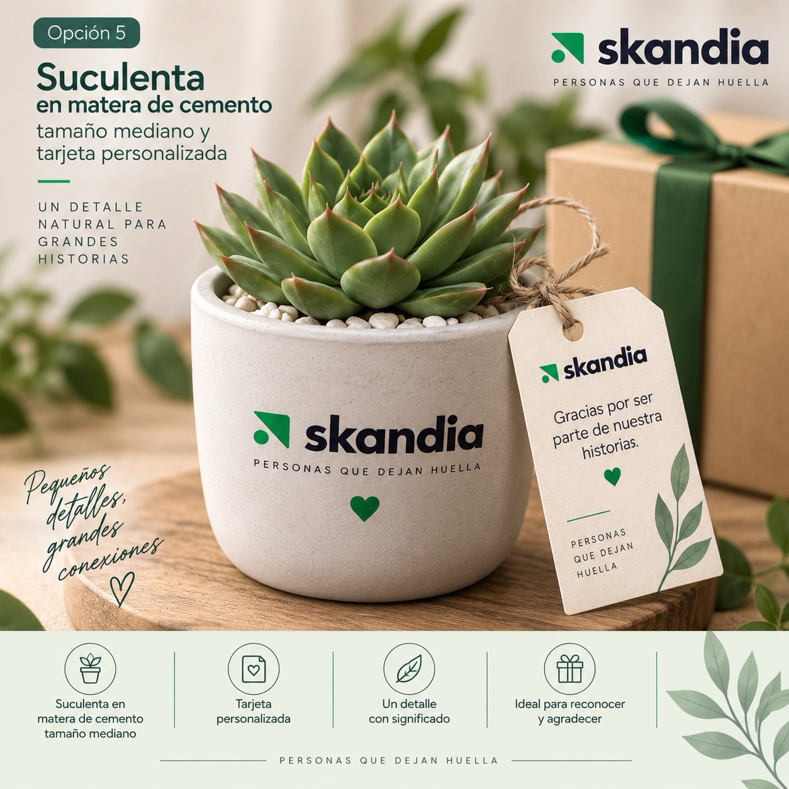
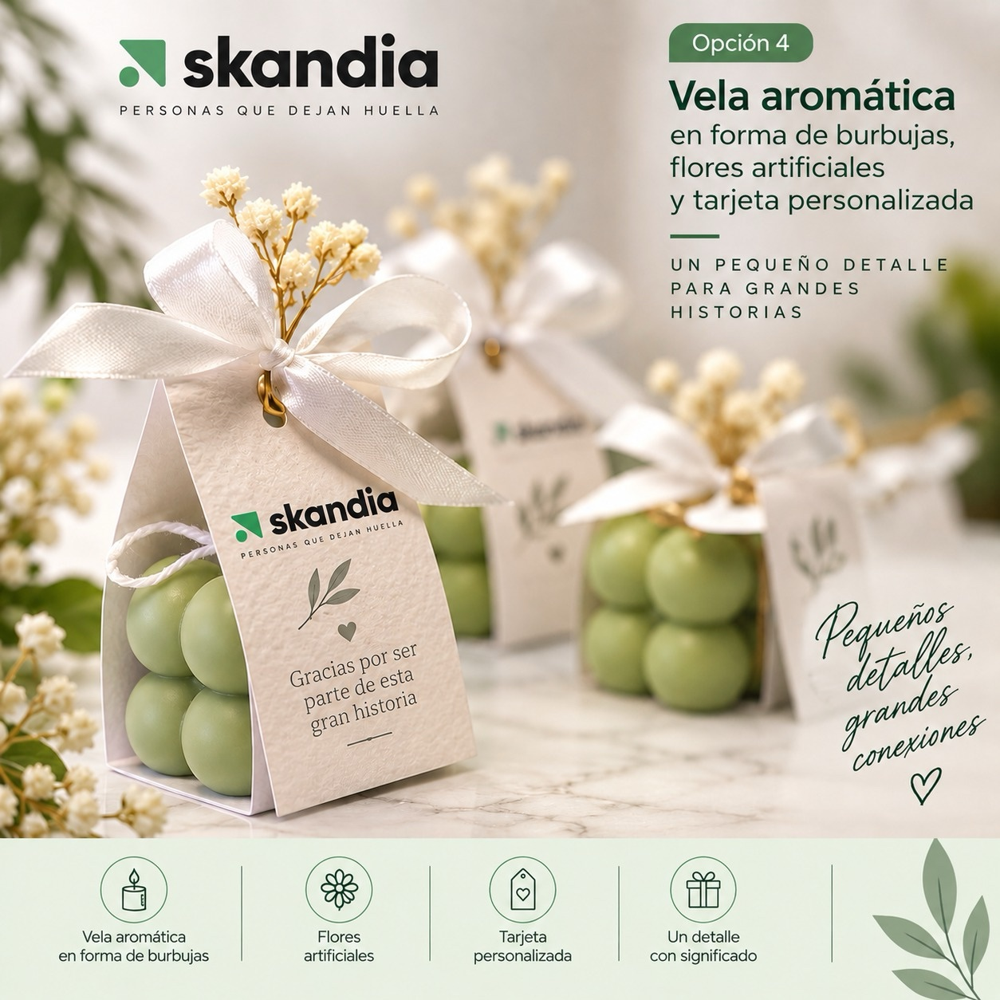
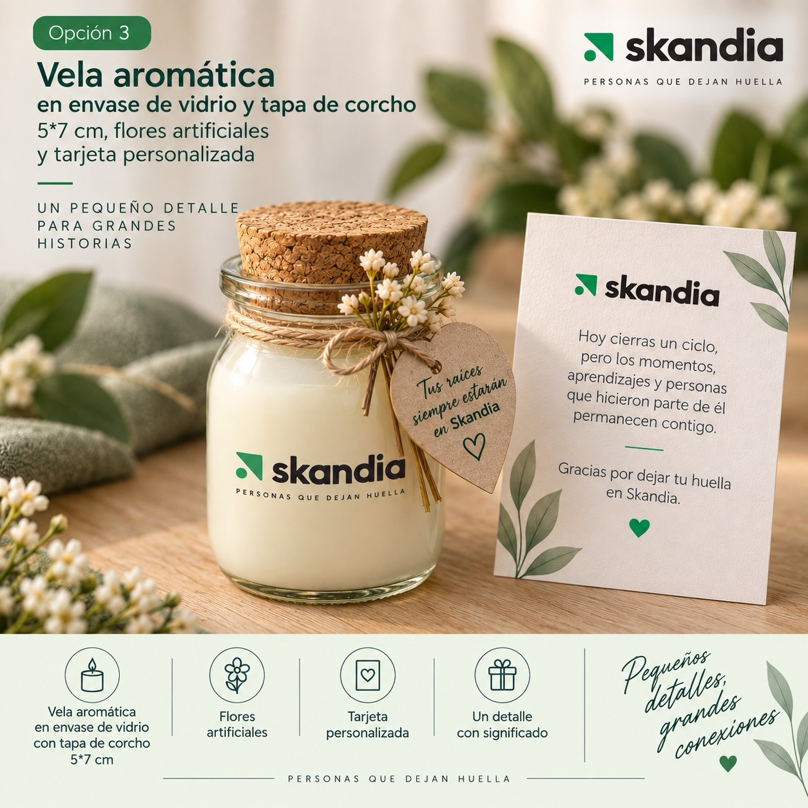
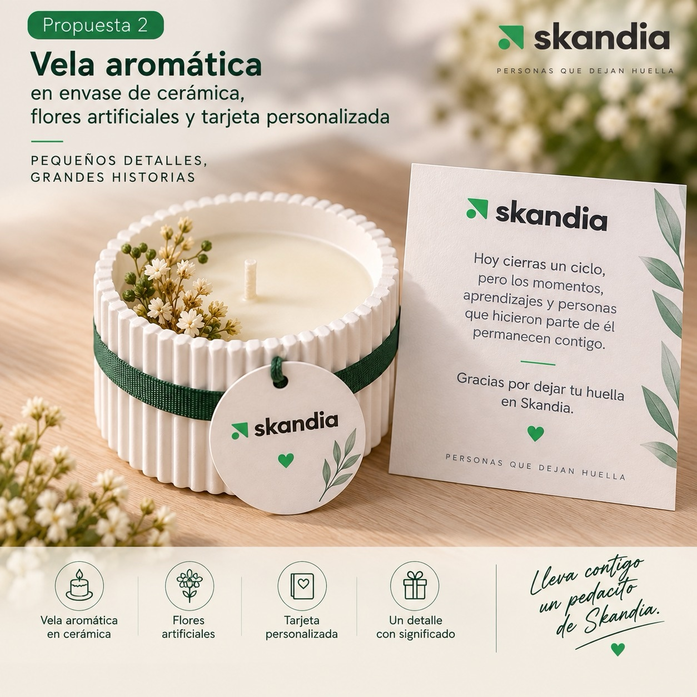
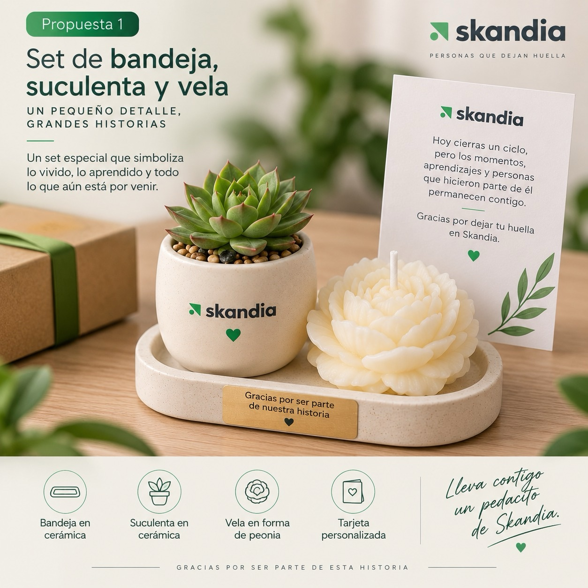

Cerrar un capítulo con Skandia no debería significar cerrar la relación. Por qué existe este proyecto, qué hemos construido y qué sigue.
"¿Cómo podemos mejorar la experiencia de una persona retirada… para que siga siendo cliente de nosotros, para que sea un buen embajador de la marca?"
El proceso operativo de retiro ya está digitalizado: documentos de liquidación automáticos, paz y salvos por Teams, dos opciones públicas de inversión de cesantías.
Acompañamiento diferenciado, comunidad de ex colaboradores, orientación financiera en el momento del retiro, y un indicador que diga si el proceso funcionó.
Entre 2023 y 2026, 802 personas que se retiraron mantienen al menos un producto activo con Skandia. Juntas suman 1.104 productos, porque una persona puede tener varios. La relación no termina con el retiro: cambia de forma. Este proyecto existe para cuidarla.
| Producto | Comercial | Admin | Total |
|---|---|---|---|
| FPOB Pensión obligatoria | 96 | 352 | 448 |
| Cesantías | 93 | 295 | 388 |
| MFUND Pensión voluntaria | 72 | 129 | 201 |
| CREA Patrimonio | 25 | 22 | 47 |
| CREA | 11 | 9 | 20 |
| Total productos | 297 | 807 | 1.104 |
Las comunidades de ex colaboradores (KPMG, McKinsey) construyen pertenencia, pero no tocan lo financiero. Los seguros de desempleo (Falabella, Bolívar) protegen el ingreso, pero no construyen comunidad. Ningún referente une las dos mitades.
| ComunidadKPMG Alumni | ComunidadMcKinsey Alumni | Seguro de desempleoSeguros Falabella | Seguro de desempleoSeguros Bolívar | Nuestra propuestaSiempre Skandia | |
|---|---|---|---|---|---|
| Qué es | Página para ex colaboradores dentro del sitio de KPMG. | Portal completo para ex colaboradores. | Seguro de desempleo que la persona compra en línea. | Seguro que paga las cuotas de los créditos (clientes Davivienda). | Programa y portal para quienes salen de Skandia. |
| Qué ofrece | Red de más de 6.000 personas, contenido especializado, eventos y oportunidades laborales. | Directorio, perfil propio, bolsa de empleo, eventos y noticias cada semana. | Orientación telefónica en hoja de vida, entrevistas, finanzas, temas jurídicos y apoyo emocional. | Solo la cobertura económica. Sin orientación ni acompañamiento. | Seguimiento de la liquidación y los documentos, reconocimiento, comunidad y kit de despedida. |
| Protección ante el desempleo | ✕ No tiene. Sin orientación financiera. | ✕ No tiene. Solo bolsa de empleo. | ✓ Hasta 6 cuotas de $600.000, desde $21.990 al mes. | ✓ Solo si la salida no fue elegida: cubre despido sin justa causa y mutuo acuerdo. No cubre renuncia, período de prueba ni justa causa. | ✓ Orientación al subsidio de desempleo de Compensar y continuidad de los productos Skandia. |
| Lo que tomamos | Una regla de ingreso simple: mínimo 6 meses y salida voluntaria o fin de contrato. | Autogestión dentro de un portal propio y comunicación constante. | Un mismo beneficio puede unir dinero, empleabilidad y apoyo emocional. | Agrupar los motivos de salida en dos grupos: la base de nuestras 2 rutas. | Une las dos mitades: pertenencia y bienestar financiero. |
Fuente: navegación directa de cada sitio, agosto de 2026. El detalle de los 7 referentes está en el informe completo.
Calificamos 12 aspectos de la experiencia de salida con la misma escala del benchmark. No estamos por debajo del mercado: en 8 aspectos todavía no tenemos nada.
La persona sabe qué pasos siguen y cuánto tarda su salida.
Alguien de la compañía guía a la persona durante su salida.
La persona consulta su proceso y sus documentos por su cuenta.
Un gesto personal que agradece la trayectoria de quien sale.
Ayuda para decidir qué hacer con la liquidación y las cesantías.
Apoyo para encontrar el siguiente empleo.
La persona puede mantener sus productos Skandia después de salir.
Un espacio para que quienes salieron sigan conectados.
Comunicación periódica y útil con quienes ya salieron.
Beneficios concretos, como referidos o volver a ser contratado.
Un trato distinto según el motivo de la salida.
Un indicador que muestra si la experiencia de salida funcionó.
Sin un primer contacto financiero desde el día 1, cualquier oferta en el momento de la salida se lee como venta oportunista.
Inducción estándar
Diagnóstico y plan con un asesor
Revisión financiera anual
Ruta por tipo de salida y encuesta
Reconocimiento y comunidad
Continuidad de sus productos
Referidos y posible regreso
Agrupamos los 8 motivos de retiro en dos rutas, como lo hace Seguros Bolívar: salidas que la persona eligió y salidas que no eligió. Dentro de cada ruta, el tono se ajusta al momento que vive la persona.
Renuncia voluntaria, terminación por pensión, fallecimiento.
Mutuo acuerdo, sin justa causa, justa causa, terminación de contrato, período de prueba.
El proceso completo hasta el pago toma hasta 10 días. Perder esa ventana pierde, sin recuperación, el beneficio tributario del PAC de desvinculación.
Única ventana viable para el PAC. Cae en los días emocionalmente más crudos del proceso, sobre todo en Ruta 2. Si se pierde: no es recuperable — la próxima liquidación es la única otra oportunidad.
Cesantías, plan financiero, comunidad, empleabilidad. Si se pierde, se recupera más adelante — solo pierde fuerza.
Rediseñar la entrevista y la encuesta de retiro: preguntas sobre la salida, no sobre el clima laboral, y un indicador claro. Sin esta base, no podemos saber si lo demás funciona.
Orientar a la persona antes y después del pago de su liquidación, en paralelo con iniciativas de bienestar financiero en curso, como B2Link. Es lo que más nos diferencia del mercado.
Un modelo de comunidad de ex colaboradores, con comunicación periódica y contenido de bienestar financiero.
Cuatro entregables listos para validar con Recursos Humanos.
La persona sigue su liquidación, sube y descarga sus documentos, responde la entrevista y la encuesta, y conoce el subsidio de desempleo de Compensar.
Guía paso a paso del proceso de retiro, ajustada con los comentarios de Gestión Humana.
Rediseñadas según el tipo de salida, con preguntas cerradas y una sola pregunta abierta al final. Ya están dentro del portal.
Presupuesto para cerca de 300 unidades. Falta definir el contenido final: algo sencillo y sin expectativas exageradas.
Un kit físico en la última semana dentro de la organización materializa el reconocimiento antes de que llegue el proceso digital. Presupuesto estimado: ~300 unidades.





El prototipo ya muestra la experiencia. Para llevarla a producción, estamos resolviendo tres frentes con las áreas de tecnología.
Cómo ingresa al portal una persona que ya no tiene correo corporativo.
Firmar los documentos de retiro dentro del portal, sin descargarlos, firmarlos y volver a subirlos.
Un servidor seguro para cerca de 1.000 documentos al año: 7 por cada persona que sale.
La v1 se enfoca en la salida. La v2.0 suma el acompañamiento financiero, cuando tengamos el chatbot.
B2Link es un proyecto de todo el año, sin fechas comprometidas.
El riesgo se concentra antes del pago, el momento más frágil de Ruta 2.
Validar solo con empleados de Skandia genera adopción forzada, no elección real.
Empleador y proveedor financiero de la misma persona, a la vez.
Una persona de Arquitectura que nos acompañe a cerrar los pendientes de servidor, acceso y firma electrónica.
El benchmark completo, las 7 fichas de referentes, la auditoría de la encuesta anterior y el detalle de cada territorio.
Abrir el informe completo →Ambos disponibles en línea, navegables desde cualquier dispositivo.